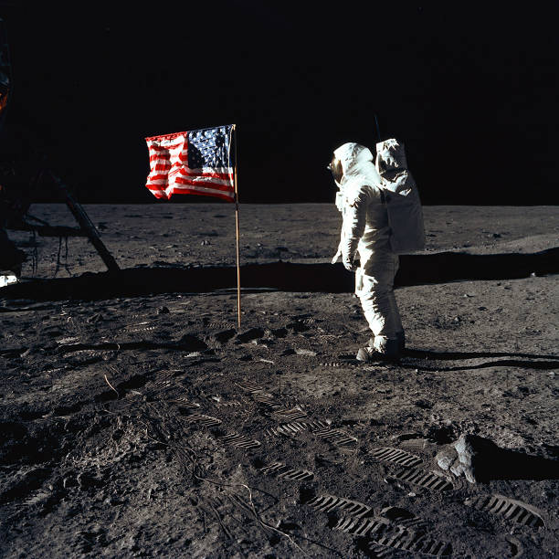

Who am I?
I am the Apollo 11 Lunar Laser Ranging Retroreflector, a scientific instrument left on the Moon by lunar module pilot Buzz Aldrin alone in July 1969. I am not the lunar module, and I am not a spacecraft that can move. I am a panel of optical corner-cube reflectors mounted on a support that rests on the lunar surface near Tranquility Base. My job is simple to describe but powerful in science: send a short laser pulse from Earth toward the Moon, let my reflectors return part of that light toward its source, and measure the round-trip travel time. A tiny instrument can therefore help scientists study the Earth-Moon system with precision.
